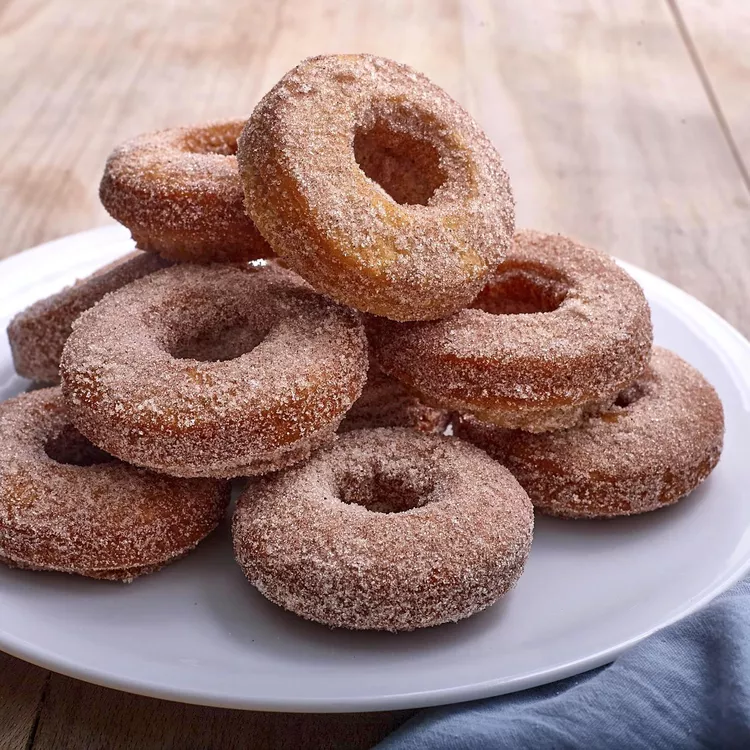

Donuts

Donuts Recipe
This easy recipe cooks fast and you may already have the ingredients in your kitchen! The prep time is 15 minutes, cook time is 15 minutes and the total time is 30 minutes. This recipe serves 18.
Ingredients
- ⅜ cup milk
- 2 tablespoons white vinegar
- ½ cup white sugar
- 2 tablespoons shortening
- 1 egg
- ½ teaspoon vanilla extract
- 2 cups sifted all-purpose flour
- ½ teaspoon baking soda
- ¼ teaspoon salt
- 1 quart oli for deep frying
- ½ cup confectioners' sugar for dusting
Steps
- Stir together milk and vinegar; let stand for a few minutes until thick.
- Cream together sugar and shortening in a mixing bowl until smooth. Beat in egg and vanilla until well-blended. Sift together flour, baking soda, and salt in a separate bowl; stir into sugar mixture alternating with milk mixture.
- Roll dough out on a floured surface to 1/3-inch thickness. Cut into donuts using a donut cutter. Let stand for about 10 minutes.
- Heat oil in a large, deep skillet to 375 degrees F (190 degrees C).
- Fry donuts in hot oil in batches until golden, turning over once, about 1 to 2 minutes per side. Drain on paper towels.
- Dust with confectioners' sugar while they are still warm and serve.